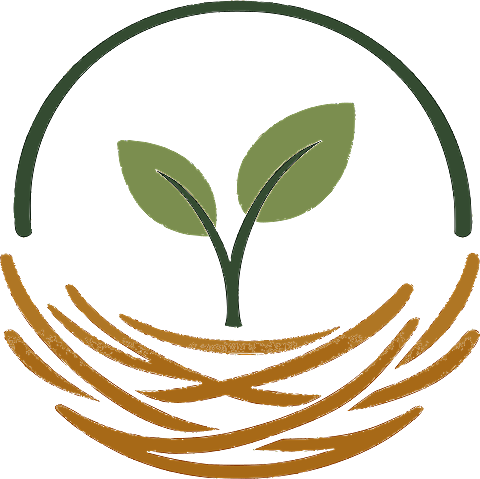

Hi, I'm Juniper.
Let's figure this out together.
Tell me what you're building. Where are you hoping it goes? What's already happened? Anything making it difficult today?
If it helps, this sounds like...
I have one question.
What does finished look like for this project?
A short answer is enough.
Here's what I think I heard.
The path I see
I'll use this only after you say it feels right. You can change it whenever the project changes.
Good morning. 🌿
How much time
do you have today?
I’ll use where you left off, your milestone, and the time you actually have to choose the most useful next step.
Where you left off
Whiteboard flowCurrent milestone: complete the beta Home experience.IterNest
Tell me how much time you have, and I’ll choose the next useful move from your project.
What would be most helpful right now?
Use this when
You want help fleshing out what’s in your head. If you already know what to do, skip this and just take the next move.
Saved project memory
Home uses where the person left off + available time + milestone health. Need Help diagnoses the blocker, not time.
Show me what’s in your head
IterNest saves the useful decisions from this Whiteboard so next time it remembers why you built it this way.
For the next 10 minutes
Tighten the Whiteboard choice.
This is the builder path: one clear task, no brainstorming required.
Action plan
Save your progress
Saving progress updates where you left off, the next recommended move, and your milestone health.
Pick what you’re working on today.
Projects are separate nests. Each one keeps its own milestone, saved progress, Coffee history, and next recommended move.
Your conversations
What feels stuck?
This is for diagnosing the blocker, not choosing your available time.